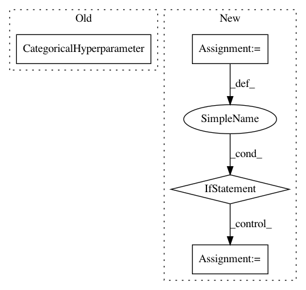

7cb6c2272c853f53739661d40238d63d84422c35,AutoSklearn/autosklearn.py,AutoSklearnClassifier,get_hyperparameter_search_space,#Any#Any#Any#Any#Any#Any#Any#,279
Before Change
raise ValueError("No classifier to build a configuration space "
"for...")
classifier = CategoricalHyperparameter("classifier", names,
default="random_forest" if "random_forest" in names else names[0])
cs.add_hyperparameter(classifier)
for name in names + names_:
// We have to retrieve the configuration space every time because
After Change
classifier_default = None
for cd_ in classifier_defaults:
if cd_ in names:
classifier_default = cd_
break
if classifier_default is None:
classifier_default = names[0]
classifier = CategoricalHyperparameter("classifier", names,
default=classifier_default)
cs.add_hyperparameter(classifier)
for name in names + names_:
In pattern: SUPERPATTERN
Frequency: 3
Non-data size: 4
Instances
Project Name: automl/auto-sklearn
Commit Name: 7cb6c2272c853f53739661d40238d63d84422c35
Time: 2015-01-09
Author: feurerm@informatik.uni-freiburg.de
File Name: AutoSklearn/autosklearn.py
Class Name: AutoSklearnClassifier
Method Name: get_hyperparameter_search_space
Project Name: automl/auto-sklearn
Commit Name: a9424721477b640dcd61435340bbc3e4d7e8902e
Time: 2015-04-23
Author: feurerm@informatik.uni-freiburg.de
File Name: ParamSklearn/components/preprocessing/nystroem_sampler.py
Class Name: Nystroem
Method Name: get_hyperparameter_search_space
Project Name: automl/auto-sklearn
Commit Name: 2b82a0f66a851603acf9b510265be9b3814143bb
Time: 2015-04-17
Author: feurerm@informatik.uni-freiburg.de
File Name: ParamSklearn/components/classification/k_nearest_neighbors.py
Class Name: KNearestNeighborsClassifier
Method Name: get_hyperparameter_search_space